Six Classics. 6,820 Characters Each.
Every card below is a real output of this page, rendered from public-domain works. Each one is a single SVG file that plays inside a GitHub README.






The Studio.
Drag the frame on the source image, pick a contrast mode and watch every stage of the pipeline update.
Drag the frame · scroll or +/− to zoom · arrow keys move it.
- Upload the file to
assets/portrait.svginusername/username. - Paste the code into
README.md. - Commit. It types itself out on your profile.
Hand it to an AI coding agent
Built Like Software, Not A Filter.
The JavaScript port reproduces the reference Python/Pillow script cell for cell: 6,820 of 6,820 characters and colours, and a byte-identical SVG. Local contrast matches OpenCV's CLAHE on 99.98% of pixels.
GitHub strips inline SVG and blocks scripts and fonts in README images. The typing is pure SMIL, and every line is pinned with textLength so macOS, Windows and Linux line up.
Rows are visible by default and the delay lives in keyTimes. Email previews, social cards and screenshots always show the full portrait.
We Give A FAQ.
Why not paste the <svg> straight into the README?
GitHub strips inline SVG from Markdown. It has to be a file loaded with <img>, where scripts and web fonts are blocked and only SMIL animation runs.
Is my photo uploaded?
No. Pixels are read and converted in your browser. The only network call is the GitHub API lookup when you type a username.
Global or local contrast?
Global equalisation gives bold silhouettes. Local (CLAHE) keeps detail inside faces when the background is bright or busy. Try both on your image; the pipeline window shows the difference.
It looks blank in an email preview.
It should not: every line is visible by default and the animation only hides lines briefly while it plays. Turn the animation off for a fully static file.
Where do the example images come from?
Public-domain works from Wikimedia Commons. Sources are listed in CREDITS.md.